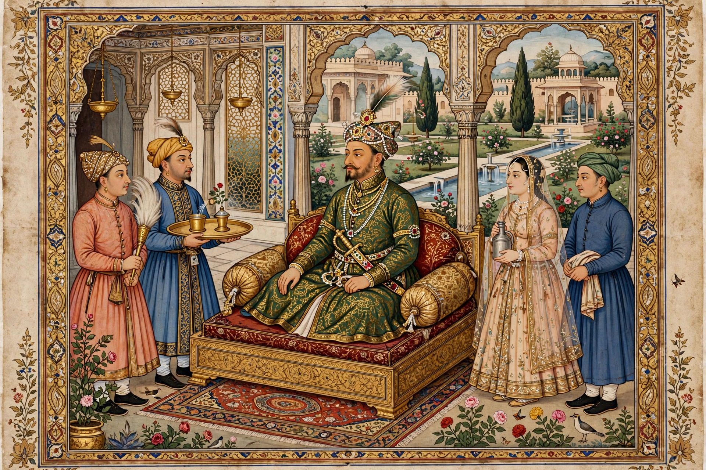

Mughal painting is a style of painting on paper developed in the court workshops of the Mughal Empire (1526–1857), blending Persian miniature traditions with Indian techniques and, later, European influences. It flourished especially under Humayun, Akbar, Jahangir, and Shah Jahan.

| Mughal painting | |
|---|---|
| Period | 16th–19th centuries |
| Patrons | Humayun, Akbar, Jahangir, Shah Jahan |
| Notable artists | Basawan, Abu'l-Hasan, Bichitr, Daswanth |
Humayun, exiled in Persia, brought Persian masters Mir Sayyid Ali and Abd al-Samad to India. Under Akbar, a large atelier (tasvir khana) with over 100 artists illustrated manuscripts such as the Hamzanama, Tutinama, and the illustrated Akbarnama and Razmnama (Mahabharata).
Under Jahangir, painting reached a peak of naturalism, with exquisite studies of animals, birds, and flowers, allegorical portraits, and European motifs from prints brought by Jesuits. Shah Jahan's period favored formal court scenes and jewel-like finish. After Aurangzeb, patronage declined and artists migrated to regional courts, seeding Rajput and Deccan styles.
Works were usually opaque watercolor and gold on paper, made collaboratively: composition, drawing, coloring and faces often by different hands, with margins decorated in later albums (muraqqa).